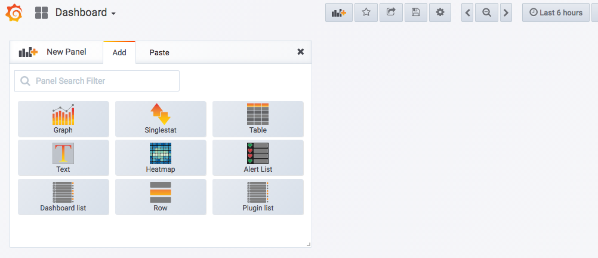
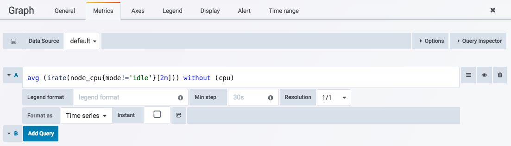
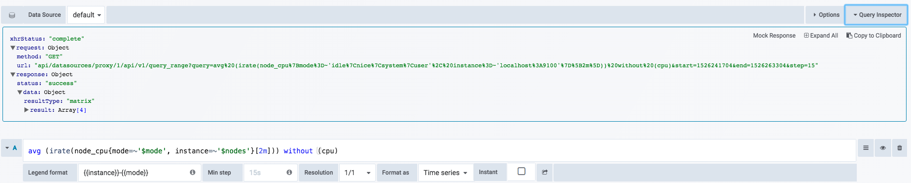

<!DOCTYPE HTML>
<html lang="" >
    <head>
        <meta charset="UTF-8">
        <meta content="text/html; charset=utf-8" http-equiv="Content-Type">
        <title>Grafana与数据可视化 · GitBook</title>
        <meta http-equiv="X-UA-Compatible" content="IE=edge" />
        <meta name="description" content="">
        <meta name="generator" content="GitBook 3.2.3">
        
        
        
    
    <link rel="stylesheet" href="../gitbook/style.css">

    
            
                
                <link rel="stylesheet" href="../gitbook/gitbook-plugin-highlight/website.css">
                
            
                
                <link rel="stylesheet" href="../gitbook/gitbook-plugin-search/search.css">
                
            
                
                <link rel="stylesheet" href="../gitbook/gitbook-plugin-fontsettings/website.css">
                
            
        

    

    
        
    
        
    
        
    
        
    
        
    
        
    

        
    
    
    <meta name="HandheldFriendly" content="true"/>
    <meta name="viewport" content="width=device-width, initial-scale=1, user-scalable=no">
    <meta name="apple-mobile-web-app-capable" content="yes">
    <meta name="apple-mobile-web-app-status-bar-style" content="black">
    <link rel="apple-touch-icon-precomposed" sizes="152x152" href="../gitbook/images/apple-touch-icon-precomposed-152.png">
    <link rel="shortcut icon" href="../gitbook/images/favicon.ico" type="image/x-icon">

    
    <link rel="next" href="use_graph_panel.html" />
    
    
    <link rel="prev" href="grafana-intro.html" />
    

    </head>
    <body>
        
<div class="book">
    <div class="book-summary">
        
            
<div id="book-search-input" role="search">
    <input type="text" placeholder="Type to search" />
</div>

            
                <nav role="navigation">
                


<ul class="summary">
    
    

    

    
        
        
    
        <li class="chapter " data-level="1.1" data-path="../">
            
                <a href="../">
            
                    
                    Introduction
            
                </a>
            

            
        </li>
    
        <li class="chapter " data-level="1.2" data-path="../Introduction.html">
            
                <a href="../Introduction.html">
            
                    
                    全书组织
            
                </a>
            

            
        </li>
    

    
        
        <li class="header">Part I - Prometheus基础</li>
        
        
    
        <li class="chapter " data-level="2.1" data-path="../quickstart/">
            
                <a href="../quickstart/">
            
                    
                    第1章 介绍
            
                </a>
            

            
            <ul class="articles">
                
    
        <li class="chapter " data-level="2.1.1" data-path="../quickstart/why-monitor.html">
            
                <a href="../quickstart/why-monitor.html">
            
                    
                    Prometheus简介
            
                </a>
            

            
        </li>
    
        <li class="chapter " data-level="2.1.2" data-path="../quickstart/prometheus-quick-start.html">
            
                <a href="../quickstart/prometheus-quick-start.html">
            
                    
                    初识Prometheus
            
                </a>
            

            
            <ul class="articles">
                
    
        <li class="chapter " data-level="2.1.2.1" data-path="../quickstart/install-prometheus-server.html">
            
                <a href="../quickstart/install-prometheus-server.html">
            
                    
                    安装Prometheus Server
            
                </a>
            

            
        </li>
    
        <li class="chapter " data-level="2.1.2.2" data-path="../quickstart/use-node-exporter.html">
            
                <a href="../quickstart/use-node-exporter.html">
            
                    
                    使用Node Exporter采集主机数据
            
                </a>
            

            
        </li>
    
        <li class="chapter " data-level="2.1.2.3" data-path="../quickstart/promql_quickstart.html">
            
                <a href="../quickstart/promql_quickstart.html">
            
                    
                    使用PromQL查询监控数据
            
                </a>
            

            
        </li>
    
        <li class="chapter " data-level="2.1.2.4" data-path="../quickstart/use-grafana-create-dashboard.html">
            
                <a href="../quickstart/use-grafana-create-dashboard.html">
            
                    
                    监控数据可视化
            
                </a>
            

            
        </li>
    

            </ul>
            
        </li>
    
        <li class="chapter " data-level="2.1.3" data-path="../quickstart/prometheus-job-and-instance.html">
            
                <a href="../quickstart/prometheus-job-and-instance.html">
            
                    
                    任务和实例
            
                </a>
            

            
        </li>
    
        <li class="chapter " data-level="2.1.4" data-path="../quickstart/prometheus-arch.html">
            
                <a href="../quickstart/prometheus-arch.html">
            
                    
                    Prometheus核心组件
            
                </a>
            

            
        </li>
    
        <li class="chapter " data-level="2.1.5" data-path="../quickstart/SUMMARY.html">
            
                <a href="../quickstart/SUMMARY.html">
            
                    
                    小结
            
                </a>
            

            
        </li>
    

            </ul>
            
        </li>
    
        <li class="chapter " data-level="2.2" data-path="../promql/">
            
                <a href="../promql/">
            
                    
                    第2章 探索PromQL
            
                </a>
            

            
            <ul class="articles">
                
    
        <li class="chapter " data-level="2.2.1" data-path="../promql/what-is-prometheus-metrics-and-labels.html">
            
                <a href="../promql/what-is-prometheus-metrics-and-labels.html">
            
                    
                    理解时间序列
            
                </a>
            

            
        </li>
    
        <li class="chapter " data-level="2.2.2" data-path="../promql/prometheus-metrics-types.html">
            
                <a href="../promql/prometheus-metrics-types.html">
            
                    
                    Metrics类型
            
                </a>
            

            
        </li>
    
        <li class="chapter " data-level="2.2.3" data-path="../promql/prometheus-query-language.html">
            
                <a href="../promql/prometheus-query-language.html">
            
                    
                    初识PromQL
            
                </a>
            

            
        </li>
    
        <li class="chapter " data-level="2.2.4" data-path="../promql/prometheus-promql-operators-v2.html">
            
                <a href="../promql/prometheus-promql-operators-v2.html">
            
                    
                    PromQL操作符
            
                </a>
            

            
        </li>
    
        <li class="chapter " data-level="2.2.5" data-path="../promql/prometheus-aggr-ops.html">
            
                <a href="../promql/prometheus-aggr-ops.html">
            
                    
                    PromQL聚合操作
            
                </a>
            

            
        </li>
    
        <li class="chapter " data-level="2.2.6" data-path="../promql/prometheus-promql-functions.html">
            
                <a href="../promql/prometheus-promql-functions.html">
            
                    
                    PromQL内置函数
            
                </a>
            

            
        </li>
    
        <li class="chapter " data-level="2.2.7" data-path="../promql/prometheus-promql-with-http-api.html">
            
                <a href="../promql/prometheus-promql-with-http-api.html">
            
                    
                    在HTTP API中使用PromQL
            
                </a>
            

            
        </li>
    
        <li class="chapter " data-level="2.2.8" data-path="../promql/prometheus-promql-best-praticase.html">
            
                <a href="../promql/prometheus-promql-best-praticase.html">
            
                    
                    最佳实践：4个黄金指标和USE方法
            
                </a>
            

            
        </li>
    
        <li class="chapter " data-level="2.2.9" data-path="../promql/SUMMARY.html">
            
                <a href="../promql/SUMMARY.html">
            
                    
                    小结
            
                </a>
            

            
        </li>
    

            </ul>
            
        </li>
    
        <li class="chapter " data-level="2.3" data-path="../alert/">
            
                <a href="../alert/">
            
                    
                    第3章 Prometheus告警处理
            
                </a>
            

            
            <ul class="articles">
                
    
        <li class="chapter " data-level="2.3.1" data-path="../alert/prometheus-alert-manager-overview.html">
            
                <a href="../alert/prometheus-alert-manager-overview.html">
            
                    
                    Prometheus告警简介
            
                </a>
            

            
        </li>
    
        <li class="chapter " data-level="2.3.2" data-path="../alert/prometheus-alert-rule.html">
            
                <a href="../alert/prometheus-alert-rule.html">
            
                    
                    自定义Prometheus告警规则
            
                </a>
            

            
        </li>
    
        <li class="chapter " data-level="2.3.3" data-path="../alert/install-alert-manager.html">
            
                <a href="../alert/install-alert-manager.html">
            
                    
                    部署AlertManager
            
                </a>
            

            
        </li>
    
        <li class="chapter " data-level="2.3.4" data-path="../alert/alert-manager-config.html">
            
                <a href="../alert/alert-manager-config.html">
            
                    
                    Alertmanager配置概述
            
                </a>
            

            
        </li>
    
        <li class="chapter " data-level="2.3.5" data-path="../alert/alert-manager-route.html">
            
                <a href="../alert/alert-manager-route.html">
            
                    
                    基于标签的告警处理路由
            
                </a>
            

            
        </li>
    
        <li class="chapter " data-level="2.3.6" data-path="../alert/alert-manager-use-receiver.html">
            
                <a href="../alert/alert-manager-use-receiver.html">
            
                    
                    使用Receiver接收告警信息
            
                </a>
            

            
            <ul class="articles">
                
    
        <li class="chapter " data-level="2.3.6.1" data-path="../alert/alert-with-smtp.html">
            
                <a href="../alert/alert-with-smtp.html">
            
                    
                    集成邮件系统
            
                </a>
            

            
        </li>
    
        <li class="chapter " data-level="2.3.6.2" data-path="../alert/alert-with-slack.html">
            
                <a href="../alert/alert-with-slack.html">
            
                    
                    集成Slack
            
                </a>
            

            
        </li>
    
        <li class="chapter " data-level="2.3.6.3" data-path="../alert/alert-with-wechat.html">
            
                <a href="../alert/alert-with-wechat.html">
            
                    
                    集成企业微信
            
                </a>
            

            
        </li>
    
        <li class="chapter " data-level="2.3.6.4" data-path="../alert/alert-manager-extension-with-webhook.html">
            
                <a href="../alert/alert-manager-extension-with-webhook.html">
            
                    
                    集成钉钉：基于Webhook的扩展
            
                </a>
            

            
        </li>
    

            </ul>
            
        </li>
    
        <li class="chapter " data-level="2.3.7" data-path="../alert/alert-template.html">
            
                <a href="../alert/alert-template.html">
            
                    
                    告警模板详解
            
                </a>
            

            
        </li>
    
        <li class="chapter " data-level="2.3.8" data-path="../alert/alert-manager-inhibit.html">
            
                <a href="../alert/alert-manager-inhibit.html">
            
                    
                    屏蔽告警通知
            
                </a>
            

            
        </li>
    
        <li class="chapter " data-level="2.3.9" data-path="../alert/prometheus-recoding-rules.html">
            
                <a href="../alert/prometheus-recoding-rules.html">
            
                    
                    使用Recoding Rules优化性能
            
                </a>
            

            
        </li>
    
        <li class="chapter " data-level="2.3.10" data-path="../alert/SUMMARY.html">
            
                <a href="../alert/SUMMARY.html">
            
                    
                    小结
            
                </a>
            

            
        </li>
    

            </ul>
            
        </li>
    

    
        
        <li class="header">Part II - Prometheus进阶</li>
        
        
    
        <li class="chapter " data-level="3.1" data-path="../exporter/">
            
                <a href="../exporter/">
            
                    
                    第4章 Exporter详解
            
                </a>
            

            
            <ul class="articles">
                
    
        <li class="chapter " data-level="3.1.1" data-path="../exporter/what-is-prometheus-exporter.html">
            
                <a href="../exporter/what-is-prometheus-exporter.html">
            
                    
                    Exporter是什么
            
                </a>
            

            
        </li>
    
        <li class="chapter " data-level="3.1.2" data-path="../exporter/commonly-eporter-usage.html">
            
                <a href="../exporter/commonly-eporter-usage.html">
            
                    
                    常用Exporter
            
                </a>
            

            
            <ul class="articles">
                
    
        <li class="chapter " data-level="3.1.2.1" data-path="../exporter/use-prometheus-monitor-container.html">
            
                <a href="../exporter/use-prometheus-monitor-container.html">
            
                    
                    容器监控：cAdvisor
            
                </a>
            

            
        </li>
    
        <li class="chapter " data-level="3.1.2.2" data-path="../exporter/use-promethues-monitor-mysql.html">
            
                <a href="../exporter/use-promethues-monitor-mysql.html">
            
                    
                    监控MySQL运行状态：MySQLD Exporter
            
                </a>
            

            
        </li>
    
        <li class="chapter " data-level="3.1.2.3" data-path="../exporter/install_blackbox_exporter.html">
            
                <a href="../exporter/install_blackbox_exporter.html">
            
                    
                    网络探测：Blackbox Exporter
            
                </a>
            

            
        </li>
    

            </ul>
            
        </li>
    
        <li class="chapter " data-level="3.1.3" data-path="../exporter/custom_exporter_with_java.html">
            
                <a href="../exporter/custom_exporter_with_java.html">
            
                    
                    使用Java自定义Exporter
            
                </a>
            

            
            <ul class="articles">
                
    
        <li class="chapter " data-level="3.1.3.1" data-path="../exporter/client_library_java.html">
            
                <a href="../exporter/client_library_java.html">
            
                    
                    使用Client Java构建Exporter程序
            
                </a>
            

            
        </li>
    
        <li class="chapter " data-level="3.1.3.2" data-path="../exporter/custom_app_support_prometheus.html">
            
                <a href="../exporter/custom_app_support_prometheus.html">
            
                    
                    在应用中内置Prometheus支持
            
                </a>
            

            
        </li>
    

            </ul>
            
        </li>
    
        <li class="chapter " data-level="3.1.4" data-path="../exporter/SUMMARY.html">
            
                <a href="../exporter/SUMMARY.html">
            
                    
                    小结
            
                </a>
            

            
        </li>
    

            </ul>
            
        </li>
    
        <li class="chapter " data-level="3.2" data-path="./">
            
                <a href="./">
            
                    
                    第5章 数据与可视化
            
                </a>
            

            
            <ul class="articles">
                
    
        <li class="chapter " data-level="3.2.1" data-path="use-console-template.html">
            
                <a href="use-console-template.html">
            
                    
                    使用Console Template
            
                </a>
            

            
        </li>
    
        <li class="chapter " data-level="3.2.2" data-path="grafana-intro.html">
            
                <a href="grafana-intro.html">
            
                    
                    Grafana的基本概念
            
                </a>
            

            
        </li>
    
        <li class="chapter active" data-level="3.2.3" data-path="grafana-panels.html">
            
                <a href="grafana-panels.html">
            
                    
                    Grafana与数据可视化
            
                </a>
            

            
            <ul class="articles">
                
    
        <li class="chapter " data-level="3.2.3.1" data-path="use_graph_panel.html">
            
                <a href="use_graph_panel.html">
            
                    
                    变化趋势：Graph面板
            
                </a>
            

            
        </li>
    
        <li class="chapter " data-level="3.2.3.2" data-path="use_heatmap_panel.html">
            
                <a href="use_heatmap_panel.html">
            
                    
                    分布统计：Heatmap面板
            
                </a>
            

            
        </li>
    
        <li class="chapter " data-level="3.2.3.3" data-path="use_singlestat_panel.html">
            
                <a href="use_singlestat_panel.html">
            
                    
                    当前状态：SingleStat面板
            
                </a>
            

            
        </li>
    

            </ul>
            
        </li>
    
        <li class="chapter " data-level="3.2.4" data-path="templating.html">
            
                <a href="templating.html">
            
                    
                    模板化Dashboard
            
                </a>
            

            
        </li>
    
        <li class="chapter " data-level="3.2.5" data-path="SUMMARY.html">
            
                <a href="SUMMARY.html">
            
                    
                    小结
            
                </a>
            

            
        </li>
    

            </ul>
            
        </li>
    
        <li class="chapter " data-level="3.3" data-path="../ha/READMD.html">
            
                <a href="../ha/READMD.html">
            
                    
                    第6章 集群与高可用
            
                </a>
            

            
            <ul class="articles">
                
    
        <li class="chapter " data-level="3.3.1" data-path="../ha/prometheus-local-storage.html">
            
                <a href="../ha/prometheus-local-storage.html">
            
                    
                    本地存储
            
                </a>
            

            
        </li>
    
        <li class="chapter " data-level="3.3.2" data-path="../ha/prometheus-remote-storage.html">
            
                <a href="../ha/prometheus-remote-storage.html">
            
                    
                    远程存储
            
                </a>
            

            
        </li>
    
        <li class="chapter " data-level="3.3.3" data-path="../ha/scale-prometheus-with-federation.html">
            
                <a href="../ha/scale-prometheus-with-federation.html">
            
                    
                    联邦集群
            
                </a>
            

            
        </li>
    
        <li class="chapter " data-level="3.3.4" data-path="../ha/prometheus-and-high-availability.html">
            
                <a href="../ha/prometheus-and-high-availability.html">
            
                    
                    Prometheus高可用
            
                </a>
            

            
        </li>
    
        <li class="chapter " data-level="3.3.5" data-path="../ha/alertmanager-high-availability.html">
            
                <a href="../ha/alertmanager-high-availability.html">
            
                    
                    Alertmanager高可用
            
                </a>
            

            
        </li>
    
        <li class="chapter " data-level="3.3.6" data-path="../ha/SUMMARY.html">
            
                <a href="../ha/SUMMARY.html">
            
                    
                    小结
            
                </a>
            

            
        </li>
    

            </ul>
            
        </li>
    
        <li class="chapter " data-level="3.4" data-path="../sd/">
            
                <a href="../sd/">
            
                    
                    第7章 Prometheus服务发现
            
                </a>
            

            
            <ul class="articles">
                
    
        <li class="chapter " data-level="3.4.1" data-path="../sd/why-need-service-discovery.html">
            
                <a href="../sd/why-need-service-discovery.html">
            
                    
                    Prometheus与服务发现
            
                </a>
            

            
        </li>
    
        <li class="chapter " data-level="3.4.2" data-path="../sd/service-discovery-with-file.html">
            
                <a href="../sd/service-discovery-with-file.html">
            
                    
                    基于文件的服务发现
            
                </a>
            

            
        </li>
    
        <li class="chapter " data-level="3.4.3" data-path="../sd/service-discovery-with-consul.html">
            
                <a href="../sd/service-discovery-with-consul.html">
            
                    
                    基于Consul的服务发现
            
                </a>
            

            
        </li>
    
        <li class="chapter " data-level="3.4.4" data-path="../sd/service-discovery-with-relabel.html">
            
                <a href="../sd/service-discovery-with-relabel.html">
            
                    
                    服务发现与Relabel
            
                </a>
            

            
        </li>
    
        <li class="chapter " data-level="3.4.5" data-path="../sd/SUMMARY.html">
            
                <a href="../sd/SUMMARY.html">
            
                    
                    小结
            
                </a>
            

            
        </li>
    

            </ul>
            
        </li>
    

    
        
        <li class="header">Part III - Prometheus实战</li>
        
        
    
        <li class="chapter " data-level="4.1" data-path="../kubernetes/READMD.html">
            
                <a href="../kubernetes/READMD.html">
            
                    
                    第8章 监控Kubernetes
            
                </a>
            

            
            <ul class="articles">
                
    
        <li class="chapter " data-level="4.1.1" data-path="../kubernetes/kubernetes-with-minikube.html">
            
                <a href="../kubernetes/kubernetes-with-minikube.html">
            
                    
                    初识Kubernetes
            
                </a>
            

            
        </li>
    
        <li class="chapter " data-level="4.1.2" data-path="../kubernetes/deploy-prometheus-in-kubernetes.html">
            
                <a href="../kubernetes/deploy-prometheus-in-kubernetes.html">
            
                    
                    部署Prometheus
            
                </a>
            

            
        </li>
    
        <li class="chapter " data-level="4.1.3" data-path="../kubernetes/service-discovery-with-kubernetes.html">
            
                <a href="../kubernetes/service-discovery-with-kubernetes.html">
            
                    
                    Kubernetes下的服务发现
            
                </a>
            

            
        </li>
    
        <li class="chapter " data-level="4.1.4" data-path="../kubernetes/use-prometheus-monitor-kubernetes.html">
            
                <a href="../kubernetes/use-prometheus-monitor-kubernetes.html">
            
                    
                    监控Kubernetes集群
            
                </a>
            

            
        </li>
    
        <li class="chapter " data-level="4.1.5" data-path="../kubernetes/hap-with-prometheus.html">
            
                <a href="../kubernetes/hap-with-prometheus.html">
            
                    
                    基于Prometheus的弹性伸缩
            
                </a>
            

            
        </li>
    
        <li class="chapter " data-level="4.1.6" data-path="../kubernetes/SUMMARY.html">
            
                <a href="../kubernetes/SUMMARY.html">
            
                    
                    小结
            
                </a>
            

            
        </li>
    

            </ul>
            
        </li>
    
        <li class="chapter " data-level="4.2" data-path="../operator/">
            
                <a href="../operator/">
            
                    
                    第9章 Prometheus Operator
            
                </a>
            

            
            <ul class="articles">
                
    
        <li class="chapter " data-level="4.2.1" data-path="../operator/what-is-prometheus-operator.html">
            
                <a href="../operator/what-is-prometheus-operator.html">
            
                    
                    什么是Prometheus Operator
            
                </a>
            

            
        </li>
    
        <li class="chapter " data-level="4.2.2" data-path="../operator/use-operator-manage-prometheus.html">
            
                <a href="../operator/use-operator-manage-prometheus.html">
            
                    
                    使用Operator管理Prometheus
            
                </a>
            

            
        </li>
    
        <li class="chapter " data-level="4.2.3" data-path="../operator/use-operator-manage-monitor.html">
            
                <a href="../operator/use-operator-manage-monitor.html">
            
                    
                    使用Operator管理监控配置
            
                </a>
            

            
        </li>
    
        <li class="chapter " data-level="4.2.4" data-path="../operator/use-custom-configuration-in-operator.html">
            
                <a href="../operator/use-custom-configuration-in-operator.html">
            
                    
                    在Prometheus Operator中使用自定义配置
            
                </a>
            

            
        </li>
    
        <li class="chapter " data-level="4.2.5" data-path="../operator/SUMMARY.html">
            
                <a href="../operator/SUMMARY.html">
            
                    
                    小结
            
                </a>
            

            
        </li>
    

            </ul>
            
        </li>
    
        <li class="chapter " data-level="4.3" data-path="../REFERENCES.html">
            
                <a href="../REFERENCES.html">
            
                    
                    参考资料
            
                </a>
            

            
        </li>
    

    

    <li class="divider"></li>

    <li>
        <a href="https://www.gitbook.com" target="blank" class="gitbook-link">
            Published with GitBook
        </a>
    </li>
</ul>


                </nav>
            
        
    </div>

    <div class="book-body">
        
            <div class="body-inner">
                
                    

<div class="book-header" role="navigation">
    

    <!-- Title -->
    <h1>
        <i class="fa fa-circle-o-notch fa-spin"></i>
        <a href=".." >Grafana与数据可视化</a>
    </h1>
</div>


                    <div class="page-wrapper" tabindex="-1" role="main">
                        <div class="page-inner">
                            
<div id="book-search-results">
    <div class="search-noresults">
    
                                <section class="normal markdown-section">
                                
                                <h1 id="grafana&#x4E0E;&#x6570;&#x636E;&#x53EF;&#x89C6;&#x5316;">Grafana&#x4E0E;&#x6570;&#x636E;&#x53EF;&#x89C6;&#x5316;</h1>
<p>&#x5728;&#x7B2C;1&#x7AE0;&#x7684;&#x201C;&#x521D;&#x59CB;Prometheus&#x201D;&#x90E8;&#x5206;&#xFF0C;&#x6211;&#x4EEC;&#x5DF2;&#x7ECF;&#x5E26;&#x9886;&#x8BFB;&#x8005;&#x5927;&#x81F4;&#x4E86;&#x89E3;&#x4E86;Grafana&#x7684;&#x57FA;&#x672C;&#x4F7F;&#x7528;&#x65B9;&#x5F0F;&#x3002;&#x5BF9;&#x4E8E;Grafana&#x800C;&#x8A00;&#xFF0C;Prometheus&#x5C31;&#x662F;&#x4E00;&#x4E2A;&#x7528;&#x4E8E;&#x5B58;&#x50A8;&#x76D1;&#x63A7;&#x6837;&#x672C;&#x6570;&#x636E;&#x7684;&#x6570;&#x636E;&#x6E90;&#xFF08;Data Source&#xFF09;&#x901A;&#x8FC7;&#x4F7F;&#x7528;PromQL&#x67E5;&#x8BE2;&#x7279;&#x5B9A;Prometheus&#x5B9E;&#x4F8B;&#x4E2D;&#x7684;&#x6570;&#x636E;&#x5E76;&#x4E14;&#x5728;Panel&#x4E2D;&#x5B9E;&#x73B0;&#x53EF;&#x89C6;&#x5316;&#x3002;</p>
<p>&#x63A5;&#x4E0B;&#x6765;&#xFF0C;&#x6211;&#x4EEC;&#x5C06;&#x5E26;&#x9886;&#x8BFB;&#x8005;&#x4E86;&#x89E3;&#x5982;&#x4F55;&#x901A;&#x8FC7;Panel&#x521B;&#x5EFA;&#x7CBE;&#x7F8E;&#x7684;&#x53EF;&#x89C6;&#x5316;&#x56FE;&#x8868;&#x3002;</p>
<h2 id="&#x8BA4;&#x8BC6;&#x9762;&#x677F;&#xFF08;panel&#xFF09;">&#x8BA4;&#x8BC6;&#x9762;&#x677F;&#xFF08;Panel&#xFF09;</h2>
<p>Panel&#x662F;Grafana&#x4E2D;&#x6700;&#x57FA;&#x672C;&#x7684;&#x53EF;&#x89C6;&#x5316;&#x5355;&#x5143;&#x3002;&#x6BCF;&#x4E00;&#x79CD;&#x7C7B;&#x578B;&#x7684;&#x9762;&#x677F;&#x90FD;&#x63D0;&#x4F9B;&#x4E86;&#x76F8;&#x5E94;&#x7684;&#x67E5;&#x8BE2;&#x7F16;&#x8F91;&#x5668;(Query Editor)&#xFF0C;&#x8BA9;&#x7528;&#x6237;&#x53EF;&#x4EE5;&#x4ECE;&#x4E0D;&#x540C;&#x7684;&#x6570;&#x636E;&#x6E90;&#xFF08;&#x5982;Prometheus&#xFF09;&#x4E2D;&#x67E5;&#x8BE2;&#x51FA;&#x76F8;&#x5E94;&#x7684;&#x76D1;&#x63A7;&#x6570;&#x636E;&#xFF0C;&#x5E76;&#x4E14;&#x4EE5;&#x53EF;&#x89C6;&#x5316;&#x7684;&#x65B9;&#x5F0F;&#x5C55;&#x73B0;&#x3002;</p>
<p>Grafana&#x4E2D;&#x6240;&#x6709;&#x7684;&#x9762;&#x677F;&#x5747;&#x4EE5;&#x63D2;&#x4EF6;&#x7684;&#x5F62;&#x5F0F;&#x8FDB;&#x884C;&#x4F7F;&#x7528;&#xFF0C;&#x5F53;&#x524D;&#x5185;&#x7F6E;&#x4E86;5&#x79CD;&#x7C7B;&#x578B;&#x7684;&#x9762;&#x677F;&#xFF0C;&#x5206;&#x522B;&#x662F;&#xFF1A;Graph&#xFF0C;Singlestat&#xFF0C;Heatmap, Dashlist&#xFF0C;Table&#x4EE5;&#x53CA;Text&#x3002;</p>
<p>&#x5176;&#x4E2D;&#x50CF;Graph&#x8FD9;&#x6837;&#x7684;&#x9762;&#x677F;&#x5141;&#x8BB8;&#x7528;&#x6237;&#x53EF;&#x89C6;&#x5316;&#x4EFB;&#x610F;&#x591A;&#x4E2A;&#x76D1;&#x63A7;&#x6307;&#x6807;&#x4EE5;&#x53CA;&#x591A;&#x6761;&#x65F6;&#x95F4;&#x5E8F;&#x5217;&#x3002;&#x800C;Siglestat&#x5219;&#x5FC5;&#x987B;&#x8981;&#x6C42;&#x67E5;&#x8BE2;&#x7ED3;&#x679C;&#x4E3A;&#x5355;&#x4E2A;&#x6837;&#x672C;&#x3002;Dashlist&#x548C;Text&#x76F8;&#x5BF9;&#x6BD4;&#x8F83;&#x7279;&#x6B8A;&#xFF0C;&#x5B83;&#x4EEC;&#x4E0E;&#x7279;&#x5B9A;&#x7684;&#x6570;&#x636E;&#x6E90;&#x65E0;&#x5173;&#x3002;</p>
<p>&#x901A;&#x8FC7;Grafana UI&#x7528;&#x6237;&#x53EF;&#x4EE5;&#x5728;&#x4E00;&#x4E2A;Dashboard&#x4E0B;&#x6DFB;&#x52A0;Panel&#xFF0C;&#x70B9;&#x51FB;Dashboard&#x53F3;&#x4E0A;&#x89D2;&#x7684;&#x201C;Add Panel&#x201D;&#x6309;&#x94AE;&#xFF0C;&#x5982;&#x4E0B;&#x6240;&#x793A;&#xFF0C;&#x5C06;&#x4F1A;&#x663E;&#x793A;&#x5F53;&#x524D;&#x7CFB;&#x7EDF;&#x4E2D;&#x6240;&#x6709;&#x53EF;&#x4F7F;&#x7528;&#x7684;Panel&#x7C7B;&#x578B;&#xFF1A;</p>
<p></p>
<p>&#x9009;&#x62E9;&#x60F3;&#x8981;&#x521B;&#x5EFA;&#x7684;&#x9762;&#x677F;&#x7C7B;&#x578B;&#x5373;&#x53EF;&#x3002;&#x8FD9;&#x91CC;&#x4EE5;Graph&#x9762;&#x677F;&#x4E3A;&#x4F8B;&#xFF0C;&#x521B;&#x5EFA;Panel&#x4E4B;&#x540E;&#xFF0C;&#x5E76;&#x5207;&#x6362;&#x5230;&#x7F16;&#x8F91;&#x6A21;&#x5F0F;&#xFF0C;&#x5C31;&#x53EF;&#x4EE5;&#x8FDB;&#x5165;Panel&#x7684;&#x914D;&#x7F6E;&#x9875;&#x9762;&#x3002;&#x5BF9;&#x4E8E;&#x4E00;&#x4E2A;Panel&#x800C;&#x8A00;&#xFF0C;&#x4E00;&#x822C;&#x6765;&#x8BF4;&#x4F1A;&#x5305;&#x542B;2&#x4E2A;&#x4E3B;&#x8981;&#x7684;&#x914D;&#x7F6E;&#x9009;&#x9879;&#xFF1A;General&#xFF08;&#x901A;&#x7528;&#x8BBE;&#x7F6E;&#xFF09;&#x3001;Metrics&#xFF08;&#x5EA6;&#x91CF;&#x6307;&#x6807;&#xFF09;&#x3002;&#x5176;&#x4F59;&#x7684;&#x914D;&#x7F6E;&#x5219;&#x6839;&#x636E;Panel&#x7C7B;&#x578B;&#x7684;&#x4E0D;&#x540C;&#x800C;&#x4E0D;&#x540C;&#x3002;</p>
<p>&#x5728;&#x901A;&#x7528;&#x8BBE;&#x7F6E;&#x4E2D;&#xFF0C;&#x9664;&#x4E86;&#x4E00;&#x4E9B;Panel&#x7684;&#x57FA;&#x672C;&#x4FE1;&#x606F;&#x4EE5;&#x5916;&#xFF0C;&#x6700;&#x4E3B;&#x8981;&#x7684;&#x80FD;&#x529B;&#x5C31;&#x662F;&#x5B9A;&#x4E49;&#x52A8;&#x6001;Panel&#x7684;&#x80FD;&#x529B;&#xFF0C;&#x8FD9;&#x90E8;&#x5206;&#x5185;&#x5BB9;&#x4F1A;&#x5728;&#x672C;&#x7AE0;&#x7684;&#x201C;&#x6A21;&#x677F;&#x5316;Dashboard&#x201D;&#x5C0F;&#x7ED3;&#x4E2D;&#x8BE6;&#x7EC6;&#x4ECB;&#x7ECD;&#x3002;</p>
<p>&#x5BF9;&#x4E8E;&#x4F7F;&#x7528;Prometheus&#x4F5C;&#x4E3A;&#x6570;&#x636E;&#x6E90;&#x7684;&#x7528;&#x6237;&#xFF0C;&#x6700;&#x4E3B;&#x8981;&#x7684;&#x9700;&#x8981;&#x4E86;&#x89E3;&#x7684;&#x5C31;&#x662F;Metrics&#x8BBE;&#x7F6E;&#x7684;&#x4F7F;&#x7528;&#x3002;&#x5728;Metric&#x9009;&#x9879;&#x4E2D;&#x53EF;&#x4EE5;&#x5B9A;&#x4E49;&#x4E86;Grafana&#x4ECE;&#x54EA;&#x4E9B;&#x6570;&#x636E;&#x6E90;&#x4E2D;&#x67E5;&#x8BE2;&#x6837;&#x672C;&#x6570;&#x636E;&#x3002;<strong>Data Source</strong>&#x4E2D;&#x6307;&#x5B9A;&#x5F53;&#x524D;&#x67E5;&#x8BE2;&#x7684;&#x6570;&#x636E;&#x6E90;&#xFF0C;Grafana&#x4F1A;&#x52A0;&#x8F7D;&#x5F53;&#x524D;&#x7EC4;&#x7EC7;&#x4E2D;&#x6DFB;&#x52A0;&#x7684;&#x6240;&#x6709;&#x6570;&#x636E;&#x6E90;&#x3002;&#x5176;&#x4E2D;&#x8FD8;&#x4F1A;&#x5305;&#x542B;&#x4E24;&#x4E2A;&#x7279;&#x6B8A;&#x7684;&#x6570;&#x636E;&#x6E90;&#xFF1A;<strong>Mixed</strong>&#x548C;<strong>Grafana</strong>&#x3002; Mixed&#x7528;&#x4E8E;&#x9700;&#x8981;&#x4ECE;&#x591A;&#x4E2A;&#x6570;&#x636E;&#x6E90;&#x4E2D;&#x67E5;&#x8BE2;&#x548C;&#x6E32;&#x67D3;&#x6570;&#x636E;&#x7684;&#x573A;&#x666F;&#xFF0C;Grafana&#x5219;&#x7528;&#x4E8E;&#x9700;&#x8981;&#x67E5;&#x8BE2;Grafana&#x81EA;&#x8EAB;&#x72B6;&#x6001;&#x65F6;&#x4F7F;&#x7528;&#x3002;</p>
<p>&#x5F53;&#x9009;&#x4E2D;&#x6570;&#x636E;&#x6E90;&#x65F6;&#xFF0C;Panel&#x4F1A;&#x6839;&#x636E;&#x5F53;&#x524D;&#x6570;&#x636E;&#x6E90;&#x7C7B;&#x578B;&#x52A0;&#x8F7D;&#x4E0D;&#x540C;&#x7684;Query Editor&#x754C;&#x9762;&#x3002;&#x8FD9;&#x91CC;&#x6211;&#x4EEC;&#x4E3B;&#x8981;&#x4ECB;&#x7ECD;Prometheus Query Editor&#xFF0C;&#x5982;&#x4E0B;&#x6240;&#x793A;&#xFF0C;&#x5F53;&#x9009;&#x4E2D;&#x7684;&#x6570;&#x636E;&#x6E90;&#x7C7B;&#x578B;&#x4E3A;Prometheus&#x65F6;&#xFF0C;&#x4F1A;&#x663E;&#x793A;&#x5982;&#x4E0B;&#x754C;&#x9762;&#xFF1A;</p>
<p></p>
<p>Grafana&#x63D0;&#x4F9B;&#x4E86;&#x5BF9;PromQL&#x7684;&#x5B8C;&#x6574;&#x652F;&#x6301;&#xFF0C;&#x5728;Query Editor&#x4E2D;&#xFF0C;&#x53EF;&#x4EE5;&#x6DFB;&#x52A0;&#x4EFB;&#x610F;&#x4E2A;Query&#xFF0C;&#x5E76;&#x4E14;&#x4F7F;&#x7528;PromQL&#x8868;&#x8FBE;&#x5F0F;&#x4ECE;Prometheus&#x4E2D;&#x67E5;&#x8BE2;&#x76F8;&#x5E94;&#x7684;&#x6837;&#x672C;&#x6570;&#x636E;&#x3002;</p>
<pre><code>avg (irate(node_cpu{mode!=&apos;idle&apos;}[2m])) without (cpu)
</code></pre><p>&#x6BCF;&#x4E2A;PromQL&#x8868;&#x8FBE;&#x5F0F;&#x90FD;&#x53EF;&#x80FD;&#x8FD4;&#x56DE;&#x591A;&#x6761;&#x65F6;&#x95F4;&#x5E8F;&#x5217;&#x3002;<strong>Legend format</strong>&#x7528;&#x4E8E;&#x63A7;&#x5236;&#x5982;&#x4F55;&#x683C;&#x5F0F;&#x5316;&#x6BCF;&#x6761;&#x65F6;&#x95F4;&#x5E8F;&#x5217;&#x7684;&#x56FE;&#x4F8B;&#x4FE1;&#x606F;&#x3002;Grafana&#x652F;&#x6301;&#x901A;&#x8FC7;&#x6A21;&#x677F;&#x7684;&#x65B9;&#x5F0F;&#xFF0C;&#x6839;&#x636E;&#x65F6;&#x95F4;&#x5E8F;&#x5217;&#x7684;&#x6807;&#x7B7E;&#x52A8;&#x6001;&#x751F;&#x6210;&#x56FE;&#x4F8B;&#x540D;&#x79F0;&#xFF0C;&#x4F8B;&#x5982;&#xFF1A;&#x4F7F;&#x7528;&#x8868;&#x793A;&#x4F7F;&#x7528;&#x5F53;&#x524D;&#x65F6;&#x95F4;&#x5E8F;&#x5217;&#x4E2D;&#x7684;instance&#x6807;&#x7B7E;&#x7684;&#x503C;&#x4F5C;&#x4E3A;&#x56FE;&#x4F8B;&#x540D;&#x79F0;&#xFF1A;</p>
<pre><code>{{instance}}-{{mode}}
</code></pre><p>&#x5F53;&#x67E5;&#x8BE2;&#x5230;&#x7684;&#x6837;&#x672C;&#x6570;&#x636E;&#x91CF;&#x975E;&#x5E38;&#x5927;&#x65F6;&#x53EF;&#x4EE5;&#x5BFC;&#x81F4;Grafana&#x6E32;&#x67D3;&#x56FE;&#x6807;&#x65F6;&#x51FA;&#x73B0;&#x4E00;&#x4E9B;&#x6027;&#x80FD;&#x95EE;&#x9898;&#xFF0C;&#x901A;&#x8FC7;<strong>Min Step</strong>&#x53EF;&#x4EE5;&#x63A7;&#x5236;Prometheus&#x67E5;&#x8BE2;&#x6570;&#x636E;&#x65F6;&#x7684;&#x6700;&#x5C0F;&#x6B65;&#x957F;&#xFF08;Step&#xFF09;&#xFF0C;&#x4ECE;&#x800C;&#x51CF;&#x5C11;&#x4ECE;Prometheus&#x8FD4;&#x56DE;&#x7684;&#x6570;&#x636E;&#x91CF;&#x3002;</p>
<p><strong>Resolution</strong>&#x9009;&#x9879;&#xFF0C;&#x5219;&#x53EF;&#x4EE5;&#x63A7;&#x5236;Grafana&#x81EA;&#x8EAB;&#x6E32;&#x67D3;&#x7684;&#x6570;&#x636E;&#x91CF;&#x3002;&#x4F8B;&#x5982;&#xFF0C;&#x5982;&#x679C;<strong>Resolution</strong>&#x7684;&#x503C;&#x4E3A;<strong>1/10</strong>&#xFF0C;Grafana&#x4F1A;&#x5C06;Prometeus&#x8FD4;&#x56DE;&#x7684;10&#x4E2A;&#x6837;&#x672C;&#x6570;&#x636E;&#x5408;&#x5E76;&#x6210;&#x4E00;&#x4E2A;&#x70B9;&#x3002;&#x56E0;&#x6B64;<strong>Resolution</strong>&#x8D8A;&#x5C0F;&#x53EF;&#x89C6;&#x5316;&#x7684;&#x7CBE;&#x786E;&#x6027;&#x8D8A;&#x9AD8;&#xFF0C;&#x53CD;&#x4E4B;&#xFF0C;&#x53EF;&#x89C6;&#x5316;&#x7684;&#x7CBE;&#x5EA6;&#x8D8A;&#x4F4E;&#x3002;</p>
<p><strong>Format as</strong>&#x9009;&#x9879;&#x5B9A;&#x4E49;&#x5982;&#x4F55;&#x683C;&#x5F0F;&#x5316;Prometheus&#x8FD4;&#x56DE;&#x7684;&#x6837;&#x672C;&#x6570;&#x636E;&#x3002;&#x8FD9;&#x91CC;&#x63D0;&#x4F9B;&#x4E86;3&#x4E2A;&#x9009;&#x9879;&#xFF1A;Table,Time Series&#x548C;Heatmap&#xFF0C;&#x5206;&#x522B;&#x7528;&#x4E8E;Tabel&#x9762;&#x677F;&#xFF0C;Graph&#x9762;&#x677F;&#x548C;Heatmap&#x9762;&#x677F;&#x7684;&#x6570;&#x636E;&#x53EF;&#x89C6;&#x5316;&#x3002;</p>
<p>&#x9664;&#x6B64;&#x4EE5;&#x5916;&#xFF0C;Query Editor&#x8FD8;&#x63D0;&#x4F9B;&#x4E86;&#x8C03;&#x8BD5;&#x76F8;&#x5173;&#x7684;&#x529F;&#x80FD;&#xFF0C;&#x70B9;&#x51FB;<strong>Query Inspector</strong>&#x53EF;&#x4EE5;&#x5C55;&#x5F00;&#x76F8;&#x5173;&#x7684;&#x8C03;&#x8BD5;&#x9762;&#x677F;&#xFF1A;</p>
<p></p>
<p>&#x5728;&#x9762;&#x677F;&#x4E2D;&#xFF0C;&#x53EF;&#x4EE5;&#x67E5;&#x770B;&#x5F53;&#x524D;Prometheus&#x8FD4;&#x56DE;&#x7684;&#x6837;&#x672C;&#x6570;&#x636E;&#xFF0C;&#x7528;&#x6237;&#x4E5F;&#x53EF;&#x4EE5;&#x63D0;&#x4F9B;Mock&#x6570;&#x636E;&#x6E32;&#x67D3;&#x56FE;&#x50CF;&#x3002;</p>

                                
                                </section>
                            
    </div>
    <div class="search-results">
        <div class="has-results">
            
            <h1 class="search-results-title"><span class='search-results-count'></span> results matching "<span class='search-query'></span>"</h1>
            <ul class="search-results-list"></ul>
            
        </div>
        <div class="no-results">
            
            <h1 class="search-results-title">No results matching "<span class='search-query'></span>"</h1>
            
        </div>
    </div>
</div>

                        </div>
                    </div>
                
            </div>

            
                
                <a href="grafana-intro.html" class="navigation navigation-prev " aria-label="Previous page: Grafana的基本概念">
                    <i class="fa fa-angle-left"></i>
                </a>
                
                
                <a href="use_graph_panel.html" class="navigation navigation-next " aria-label="Next page: 变化趋势：Graph面板">
                    <i class="fa fa-angle-right"></i>
                </a>
                
            
        
    </div>

    <script>
        var gitbook = gitbook || [];
        gitbook.push(function() {
            gitbook.page.hasChanged({"page":{"title":"Grafana与数据可视化","level":"3.2.3","depth":2,"next":{"title":"变化趋势：Graph面板","level":"3.2.3.1","depth":3,"path":"grafana/use_graph_panel.md","ref":"./grafana/use_graph_panel.md","articles":[]},"previous":{"title":"Grafana的基本概念","level":"3.2.2","depth":2,"path":"grafana/grafana-intro.md","ref":"./grafana/grafana-intro.md","articles":[]},"dir":"ltr"},"config":{"gitbook":"*","theme":"default","variables":{},"plugins":["livereload"],"pluginsConfig":{"livereload":{},"highlight":{},"search":{},"lunr":{"maxIndexSize":1000000,"ignoreSpecialCharacters":false},"sharing":{"facebook":true,"twitter":true,"google":false,"weibo":false,"instapaper":false,"vk":false,"all":["facebook","google","twitter","weibo","instapaper"]},"fontsettings":{"theme":"white","family":"sans","size":2},"theme-default":{"styles":{"website":"styles/website.css","pdf":"styles/pdf.css","epub":"styles/epub.css","mobi":"styles/mobi.css","ebook":"styles/ebook.css","print":"styles/print.css"},"showLevel":false}},"structure":{"langs":"LANGS.md","readme":"README.md","glossary":"GLOSSARY.md","summary":"SUMMARY.md"},"pdf":{"pageNumbers":true,"fontSize":12,"fontFamily":"Arial","paperSize":"a4","chapterMark":"pagebreak","pageBreaksBefore":"/","margin":{"right":62,"left":62,"top":56,"bottom":56}},"styles":{"website":"styles/website.css","pdf":"styles/pdf.css","epub":"styles/epub.css","mobi":"styles/mobi.css","ebook":"styles/ebook.css","print":"styles/print.css"}},"file":{"path":"grafana/grafana-panels.md","mtime":"2019-06-28T14:06:59.673Z","type":"markdown"},"gitbook":{"version":"3.2.3","time":"2019-06-28T14:56:14.926Z"},"basePath":"..","book":{"language":""}});
        });
    </script>
</div>

        
    <script src="../gitbook/gitbook.js"></script>
    <script src="../gitbook/theme.js"></script>
    
        
        <script src="../gitbook/gitbook-plugin-livereload/plugin.js"></script>
        
    
        
        <script src="../gitbook/gitbook-plugin-search/search-engine.js"></script>
        
    
        
        <script src="../gitbook/gitbook-plugin-search/search.js"></script>
        
    
        
        <script src="../gitbook/gitbook-plugin-lunr/lunr.min.js"></script>
        
    
        
        <script src="../gitbook/gitbook-plugin-lunr/search-lunr.js"></script>
        
    
        
        <script src="../gitbook/gitbook-plugin-sharing/buttons.js"></script>
        
    
        
        <script src="../gitbook/gitbook-plugin-fontsettings/fontsettings.js"></script>
        
    

    </body>
</html>

